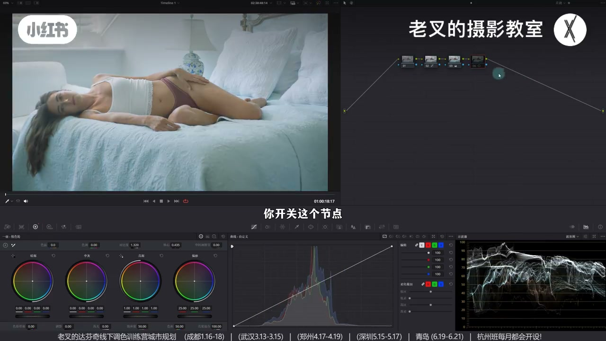
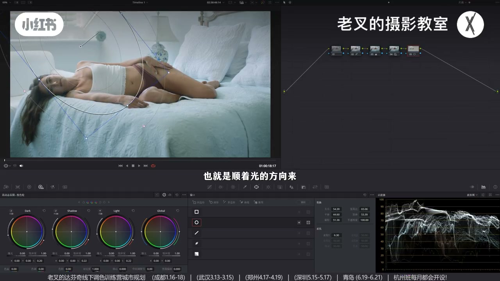
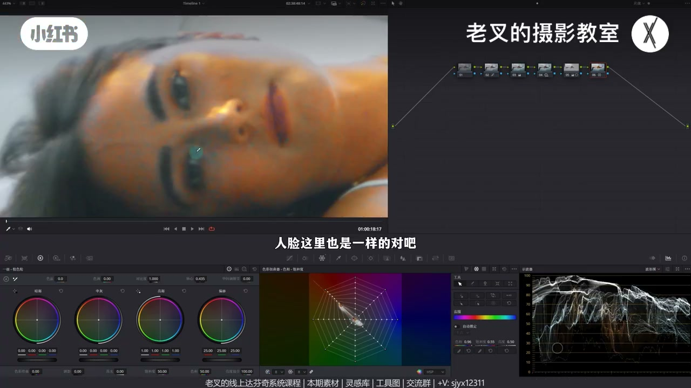
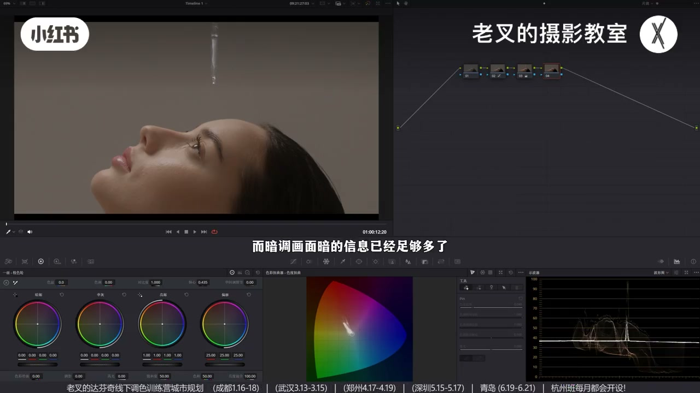
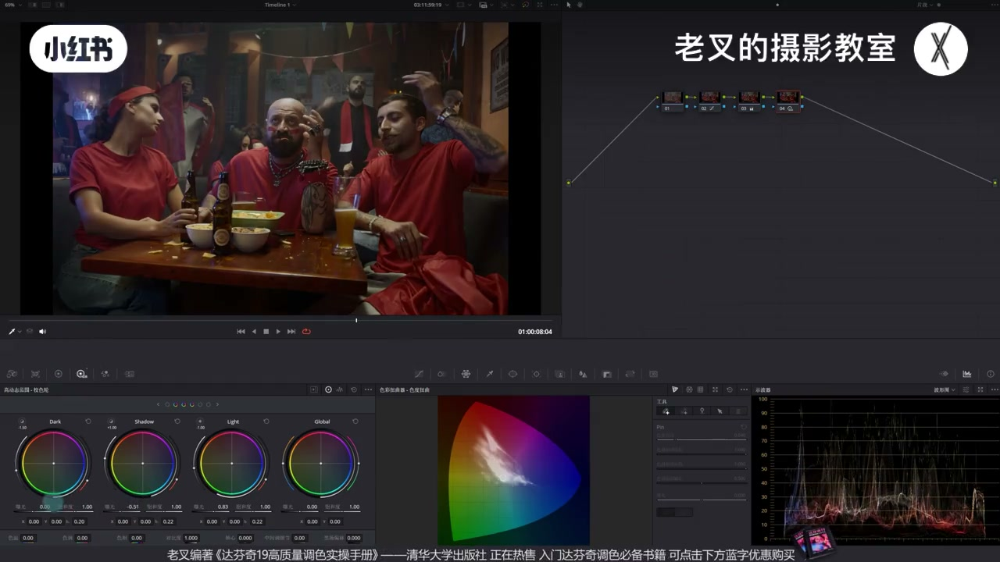
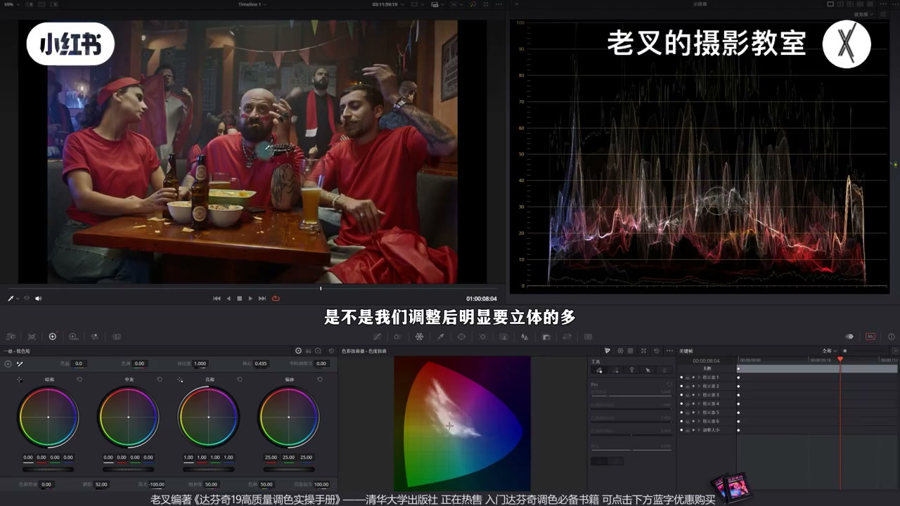

内容要点
发灰说到底是层次不够。用临时加对比度节点开关自测。亮调亮已够→缺暗：压 Shadow 让中灰下沉，但压不能过猛防死黑，再用顺光大羽化遮罩局部提亮衬托暗。暗调暗已够→缺亮：抬 Light；力度不够或顶高光时，再压 Shadow 用暗衬亮，比全局对比滑块更可控。拉开层次后再提阴影也不吃回灰。
知识结构
对比度开关测灰；亮调压 Shadow 去灰。
压暗有限：顺光羽化遮罩提亮（可带人脸），局部可控。
提饱和诊断缺暖→全局加暖+并行回冷+再微冷。
暗调测灰后抬 Light；顶过曝则改压 Shadow 衬亮。
压 Shadow 后可提阴影/压高光；波形相近但更立体。
亮调找暗、暗调找亮；都怕过头就用另一侧衬托。临时对比度是测灰工具，正式去灰用区域更可控的 HDR/遮罩，而不是只会拧全局对比。
00:00-01:14测灰：亮调缺暗就压 Shadow
发灰因为层次不够。亮调例：还原后好像不错，新节点猛加对比开关一看——之前是灰的。加对比去灰是因为亮更亮暗更暗；亮调亮已够，说明缺暗。
波形大面积堆上半，让中灰往暗走：降 Shadow。人物会明显去灰，力度可略收。

01:14-02:20压暗有限：用亮衬托暗
仍雾蒙蒙时，压暗不能太大否则死黑。用亮衬暗：顺光方向画大羽化遮罩，提高光滑块，可顺带提脸。两节点同开效果更好。
不同于纯加对比：全局对比力度难分区；这里提亮是局部且含人物，一举两得。人物仍暗可再遮罩提。

02:20-03:43附：肤色偏冷的诊断与冷暖补丁
肤与背光/受光色不对时，可临时提肤饱和：没颜色对暖肤来说就是偏冷。全局加暖让肤各区正常，再用并行找回冷饱和；背景过暖则后再微加冷。
三节点开关：肤正常、冷仍在。蓝浓或肤再修可后开节点——颜色先出来再细修。

03:43-05:02暗调：缺亮则抬 Light，顶不住就压暗衬亮
暗调还原乍看也行，对比度一测仍灰。暗已多→缺亮：小幅抬 Light 让画面出现一些较亮处，即丰富起来。
另一例同样测灰后抬 Light 略好，但光头顶部易过曝，力度有限。与亮调相反：无法大幅提亮时，降 Shadow 用暗衬亮——亮面积反而更显。仍比全局对比滑块可控、可单向调。


05:02-06:44拉开层次后再提暗部也不吃灰
若暗还不够透，可再提阴影滑块并略压高光。看似重复，但提亮建立在已拉开层次上，仍保留质感。三节点开关：波形整体曝光差不多，观感立体得多。
实用思路：先解决灰（找暗或找亮/互衬），再谈局部提透。素材可领取练习。

完整转录（281段）
以下文本由 Whisper medium 模型自动转录，可能存在少量识别误差，已尽可能修正。
这两天一直有朋友问我画面发灰的问题
发灰说到底还是因为你的层次不够
我们先以亮掉画面为例
这个画面我们给它简单做一下还原
之后能看到好像还不错
对吧
那我们要怎么检查你的画面是否发灰
有一个很好用的小技巧
我们再来一个节点
给画面加一点对比度试试看
你不管它好不好看
可以多加一点
加完了之后
你开关这个节点
你就能够发现之前画面发灰的情况
那既然我们已经明确了它发灰
我们该怎么解决呢
给这个画面增加对比度之后
它不灰是因为亮的更亮
暗的更暗
对吧
那既然它是亮掉画面
说明亮的部分是足够的
那也就是说它原本的画面缺了暗
那我们就要给画面去找更多的暗
这一点其实从波线图上也看得出来
大面积的内容堆积在了上半部分
对吧
所以我们需要让中灰的内容
让它往暗部去走
所以我们可以在后面跟一个节点
稍微给它降低一点shadow色轮的曝光
让它中灰部分的内容能够往下走
我们看到画面的变化
是不是去掉灰了
特别是人物这一块
它明显的去灰了
当然力度可以稍微小一点
不用这么多
那此时我们已经给它稍微去灰了一部分
但还不是很够
感觉画面还是雾蒙蒙的
这是为什么呢
最大的原因还是因为
我们压暗的力度不能太大
否则会有死黑的风险
对吧
那要怎么让黑的更黑
我们可以用亮来衬托
我们再来一个节点
可以给画面画一个这样的遮罩
也就是顺着光的方向
来画一个大融化的遮罩
画完了之后
稍微给它提高一点曝光
我这里选择是提高了高光划块
把人脸给带上一点
好
大概是这样的结果
我们可以把这两个节点一起来开关
看一下画面变化
是不是效果挺好的
对吧
那你说这不还是增加对比度吗
不一样
一方面只是单纯的增加对比度
它会对画面整体增加明暗反差
就导致了你对每个区域的力度不好控制
另一方面
我们提亮的行为只是局部
并且我们这个遮罩范围包含了人物
所以我们在提亮这个区域内的时候
还能够顺势提亮一下人物
一举两得
对吧
那当然了
如果你觉得此时人物还是太暗
你可以再画个制造提亮就行了
这里我就不操作了
也就是说我们对于亮调画面要找暗
但是压暗的行为又不能太过
太过会容易死黑
对吧
所以我们可以用亮来衬托暗
那对于这个画面
我们可以再多讲一下颜色
此时我们看到人物的肤色其实是不对的
对吧
包括这里的背光面
以及这里的瘦光面
颜色都是不对的
那我们怎么知道它不对呢
我们可以再来个节点
比如说用蜘蛛网
把肤色这里的薄度给它往上提
多提一点
提完了之后你会发现这里是没颜色
那它没颜色
对于肤色的暖色来讲
它就是偏冷
人脸这里也是一样的
对吧
那当然了
这里有非常多的噪点
这个不管它
那该怎么解决这个问题呢
我们明确的是肤色有部分偏冷
那偏冷就说明画面圈暖
我们就可以直接给画面加点暖
多加一点
先把肤色
给它每个区域的颜色
都能够呈现出一个正常的结果
大概是这样的一个情况
那肤色变暖了
其他冷的区域不也发生问题吗
所以我们可以按住
out加p或者是option加p
建立一个并行节点
在并行节点中
把冷的薄度给它加回来就好了
我们来看一下
大概是加到这个程度
我们来看画面此时冷与暖都有了
但是又出现了一个问题
那背景也偏暖了
对吧
包括这里的瘦光面也偏暖了
这个是我不想要的
所以我们可以再来一个节点
给整体的画面再加一点点冷
此时你看
是不是画面保持冷的效果
同时肤色也是相对正常的
我们可以把这三个节点
一起来开关看一下
肤色从这样变成了这样
同时这些冷的还是保留了
那当然
你说这个蓝的太浓
或者是肤色怎么样有什么问题
你完全可以再来个节点
单独去调整
因为颜色都出来了
这个思路大家可以感受一下
不讲太多
我们接下来来看暗调画面怎么办
我们看到这个画面
这是我们还原好的画面
乍一看好像也没有什么
特别大的问题对吧
但是呢
我们依旧通过对比度的方式
来测试一下
原本就是发灰的
那我们再分析这个画面
既然它缺对比导致发灰
而暗调画面暗的信息已经足够多了
那就证明画面缺亮
我们可以稍微给它提高一点
Light色轮的曝光
不用太多
只要能够让画面中呈现出一些
比较亮的东西就行了
我们看到
这样是不是画面就丰富起来了
也活过来了对吧
但是这样做也会有问题
什么问题呢
我们来看这个画面
给它移动到这一帧
这是还原后的画面
我们能看到
我们对它用对比度的方式
来测试一下是不是发灰
增加点对比度
然后开关一下
原本也是发灰的
对吧
那这三个素材呢
我都传到了线上分享平台
大家如果想要来感受一下的话
也可以看视频下方小字来找我
素材都是免费的
还有答复你的线上和线下的课程
我们已经明确它发灰了
而且它也是暗调画面
那此时我们是不是
也可以通过提高Light色轮的曝光
就能解决呢
我们来试试看
我们稍微提高点Light色轮的曝光
你能感觉出来稍微好了一点
画面有层次了
但是出现了一个问题
我们看中间光头的头顶
已经提的太亮了对吧
我们虽然能够提高Light色轮
来解决部分问题
但是力度是有限的
你再高的话
光头的头顶就过曝了
这肯定是不行的对吧
那该怎么办呢
此时我们就要与
亮调画面的思路相反
亮调画面还记得吧
我们是用亮来衬托暗的
那既然相反的话
暗调画面就可以用暗来衬托亮
也就是在我们无法大幅提高
亮部区域亮度的时候
可以通过降低暗部的曝光
也就是稍微降低一点
Shadow色轮的曝光
来衬托画面中小面积的亮
我们看到
我再来个节点吧
再来个节点我们看纸观一点
其实你可以放在
同一个节点上去操作
我们看到
当我们降低了
Shadow色轮的曝光之后
你会发现
画面中这些亮的面积
反而更亮了对不对
因为我们是用暗来衬托亮
然后你又说
这不还是增加对比度吗
是给画面增加对比度
但是它跟对比度又有点不同
理由跟亮调画面是一样的
你增加对比度滑块
是全局的并且不可控
而区域控制
也就是我们这样的操作
会更加可控
力度也可以根据你的需要
来单向调整
那此时我们画面
虽然变得更加立体了
也不会特别灰了
但是如果你觉得暗不太暗的话
你可以再来一个节点
稍微给它提高一点
阴影滑块的曝光
再稍微降低一点
高光滑块的曝光
让高光不要太亮
哎 你看
此时我们就让暗部提亮了
那这时候你又发现
这不还是一个重复行为吗
我们可以把这三个节点
开关一下看
我们把播信图再拉到这里来
我们看到
整体的曝光没有很大的区别
但是我们看画面的变化
是不是我们调整后
明显要立体的多
对吧
那这是因为我们
后续的提亮
也就是6号节点
提高阴影滑块的这个提亮
是在拉开层次的基础上做的
所以它还保留了
拉开层次后的一个曝光质感
所以这是一个很实用的思路
大家可以感受感受
素材大家记得领取
领取之后也可以练一练
还有打分级的线上和线下课程
那讲到这里
如果你觉得对你有帮助的话
还希望多多三连
好了
这期就到这里
886